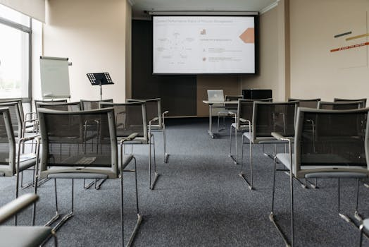

Elon Musk 的 Builder 哲學：AI 時代，動手做的人才有未來
本文是社群貼文的完整延伸版。 社群版講了核心觀念，本文加上獨家深度分析和操作指南。
重點回顧
Elon Musk 最近在 Giga Berlin 與工廠負責人 André Thierig 的訪談中，反覆強調一個概念：他最敬佩的不是管理者，不是策略家，而是 Builder — 動手造東西的人。
這個觀念放到 AI 時代有更深的含義。當 AI 可以幫你分析、規劃、寫報告，真正稀缺的能力變成「動手做出來」。AI 可以幫你想 100 個方案，但最後要有人做出第 101 個。
【獨家】為什麼台灣企業特別需要 Builder 文化
Photo by Pavel Danilyuk on Pexels
根據最新的台灣產業 AI 化大調查，七成台灣企業還沒跨過 AI 導入的門檻。這個數字聽起來嚇人，但其實原因很簡單 — 大部分企業卡在「研究」階段太久了。
我服務超過 400 家企業做 AI 培訓，發現一個有趣的規律：成功導入 AI 的企業，跟失敗的企業之間，最大的差異不是預算，不是技術能力，是文化。
成功的企業有一種「先做再說」的文化。他們不會花半年評估哪個 AI 工具最好，而是讓團隊先用一個工具解決一個具體問題。三個月後回頭看，那個最早動手的部門，通常已經跑出讓其他部門羨慕的成果了。
失敗的企業呢？他們開了十幾場研討會、做了五份評估報告、請了兩個顧問 — 但一年後，沒有任何一個員工真的在日常工作中用 AI。
台灣中小企業的 Builder 優勢
其實台灣的中小企業在這點上有天然優勢。
大企業做什麼事都要層層審批，一個 AI 工具從評估到上線可能要半年。中小企業的老闆今天在我的培訓課上學到一招，明天就直接在公司試了。
我在培訓現場遇過一個鋼鐵業的老闆，課程結束當天晚上，就用 ChatGPT 重寫了他們公司的報價流程。他跟我說：「以前要花兩小時算的報價，現在二十分鐘搞定。」
這就是 Builder。不等完美，先做出來。
「研究型」vs「Builder 型」組織的五個差異
| 面向 | 研究型組織 | Builder 型組織 |
|---|---|---|
| 對 AI 的態度 | 「等更成熟再導入」 | 「先用再說，邊做邊調」 |
| 決策方式 | 委員會審核、多次會議 | 小範圍快速試錯 |
| 衡量標準 | 報告數量、評估完整度 | 有沒有人真的在用 |
| 失敗觀 | 失敗是浪費資源 | 失敗是學習成本 |
| 典型結果 | 一年後還在評估 | 三個月後有可用成果 |
【獨家】Builder 養成指南：從今天開始的 5 個行動
Photo by Jorge Romero on Pexels
Musk 在訪談中有句話讓我印象深刻：「Try to be useful — do things that benefit your fellow human beings.」試著有用 — 做對別人有益的事。
Builder 不是要你會寫程式。Builder 的意思是：你願意動手試。
以下是我根據帶過 400 多家企業的經驗，整理出的 5 個每天可以做的 Builder 行動：
1. 每天用 AI 解決一個具體問題
不要學了工具就放著。今天就打開 ChatGPT 或 Claude，解決一個你手上的具體問題。
- 把一封冷冰冰的制式信件改寫成有溫度的版本
- 把散落的會議筆記整理成可追蹤的待辦事項
- 把一份長報告摘要成三個重點
關鍵是「具體」。不要「學 AI」，要「用 AI 做事」。
2. 用 80 分速度，不要等 100 分
Giga Berlin 從動工到量產不到兩年。Musk 的邏輯是：先做出來，再優化。
你的 AI 工作流也一樣。花三個月做出一個 80 分的自動化流程，比花一年設計 100 分的方案有用太多。因為三個月後，工具可能都換了一輪。
3. 分享你的成果
你用 AI 做了一件事，不管多小，都值得跟團隊分享。
這不是在炫耀，是在建立 Builder 文化。當一個人分享他用 AI 省了兩小時，其他人會開始想：「那我也可以試試看。」
我在培訓中常建議企業建立「AI 小贏」分享會。每週十五分鐘，每個人講一個用 AI 解決的小問題。三個月後，這家企業的 AI 使用率通常會翻倍。
4. 不怕犯錯
Musk 說寧可樂觀一點（err on the side of optimism）。他認為即使判斷偶爾出錯，樂觀的人更有可能動手做事。
用 AI 也是一樣。你第一次用 ChatGPT 寫的客服話術可能不夠好，但你用了、調了、改進了 — 這就是 Build 的過程。
5. 找到你的「第一個 AI 超能力」
不要什麼都學。先找到一個 AI 可以讓你效率翻倍的工作，把它練到熟。
- 如果你是行銷人員，先練「用 AI 寫文案」
- 如果你是業務，先練「用 AI 做客戶研究」
- 如果你是 PM，先練「用 AI 整理需求文件」
一個技能練熟了，自然會延伸到其他領域。
阿峰觀點

Photo by Pavel Danilyuk on Pexels我帶過那麼多企業培訓，最深的體悟就是：工具不是門檻，心態才是。
Musk 敬佩 Builder，不是因為 Builder 技術最強。是因為 Builder 有一種「動手就對了」的心態。
AI 時代的贏家不會是知道最多 AI 工具的人，而是最早開始動手的人。
你不需要等到把所有工具都研究完。你不需要等到公司有 AI 策略。你只需要今天打開一個 AI 工具，解決你手上的一個問題。
「不是哪個 AI 最強，是誰先做出來。」
本文提到的資源
| 工具 | 連結 | 說明 |
|---|---|---|
| Elon Musk Giga Berlin 訪談 | YouTube | Musk × André Thierig 對談 |
| ChatGPT | chat.openai.com | OpenAI 的對話式 AI |
| Claude | claude.ai | Anthropic 的 AI 助手 |
| Notion AI | notion.so | 筆記 + AI 整理工具 |
如果你是老闆或 HR，想帶團隊建立 Builder 文化、真正把 AI 用起來，歡迎到官網聯繫阿峰老師。 → www.autolab.cloud
加入 LINE 社群，跟我們一起動手玩 AI： → 加入社群
關於作者
黃敬峰（AI峰哥），企業 AI 實戰培訓專家，400+ 企業合作、10,000+ 學員。 核心心法：「會用、懂用、好用、每天用」 官網：https://www.autolab.cloud
🔗 追蹤阿峰老師
- 📝 部落格：blog.autolab.cloud
- 🎬 YouTube：黃敬峰
- 📘 Facebook：黃敬峰
- 📸 Instagram：@nikeshoxmiles
- 🧵 Threads：@nikeshoxmiles
- 💬 LINE 官方：加入好友
SEO: - Meta Title: Elon Musk 的 Builder 哲學：AI 時代動手做的人才有未來 | 阿峰老師 - Meta Description: Musk 在 Giga Berlin 訪談說他最敬佩 Builder。AI 時代真正稀缺的不是會用 AI 的人，是願意動手做出東西的人。5 個 Builder 養成行動指南。 - Tags: #AI #ElonMusk #Builder #企業培訓 #數位轉型 - Target Keywords: Elon Musk Builder, AI 時代, 企業 AI 導入, Builder 文化, 動手做